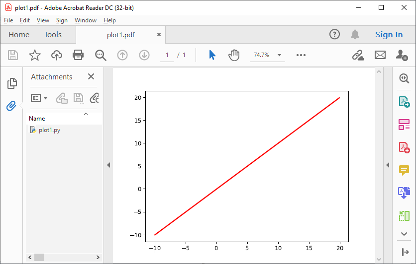
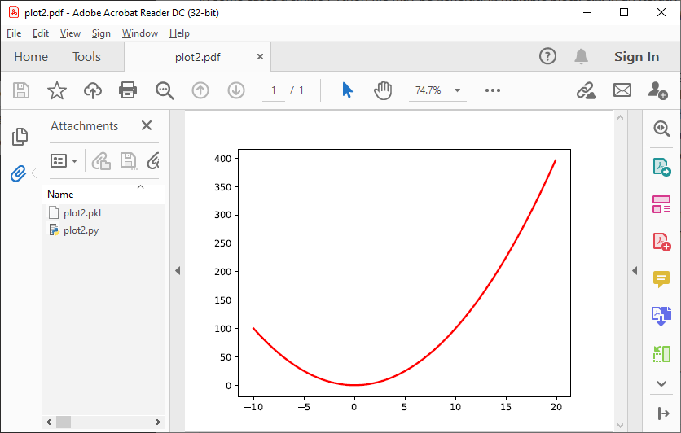
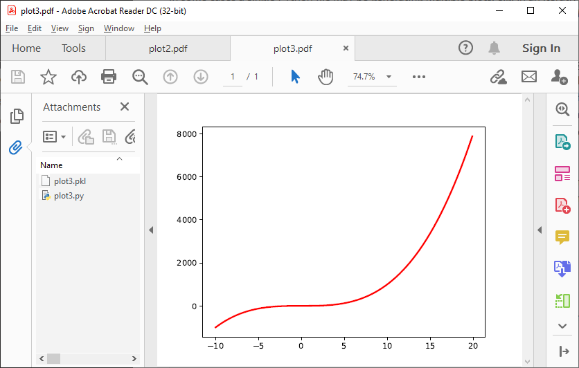

6. Multiple plots¶
In some cases a single Python file may be generating multiple plots, e.g. in an iterative loop. This poses a challenge, because according to the pypdfplot philosophy, “the generating script is the plot” – but now there are multiple plots and only one generating script.
There are two options available to resolve this issue; in the first (default), the generating script (including the iterative loop), is embedded in the first PyPDF file. After that, following plots are pickled: the figure object is saved as external file, and a small script that reads the pickled figure is included as generating Python script in the PyPDF file. With this option, each plot is stored in a separate PyPDF file, and the iterative loop can be accessed by opening the first PyPDF file.
The second way is to add the multiple plots as multiple pages in a single PyPDF file. Because there is now only a single PyPDF file, there is no ambiguity in what file the generating Python script should be embedded.
Below each of the two options are detailed with an example.
6.1. Pickling¶
The way of handling multiple files can be selected with the keyword multiple. Since pickling is the default (multiple = 'pickle'), it does not have to be specified explicitly.
The code below generates plots of a linear, quadratic, and cubic function respectively:
import pypdfplot.backend
import matplotlib.pyplot as plt
import numpy as np
x = np.arange(-10,20,0.1)
for n in range(3):
y = x**(n+1)
plt.plot(x,y)
plt.savefig('plot{:d}.pdf'.format(n+1))
plt.clf()
Which produces the following three plots:
  The first plot, plot1.pdf, has the original generating script embedded.
Plots plot2.pdf and plot3.pdf have their figure objects pickled, which are stored in plot2.pkl and plot3.pkl. By pickling their figure objects, the plots can still be modified by opening the PyPDF files in a text editor and running them as Python scripts.
The plot2.pdf file looks as follows when opened in a text editor:
#%PDF-1.4 26 0 obj << /Type /EmbeddedFile /Length 269 >> stream
import pypdfplot.backend.unpack
import matplotlib.pyplot as plt
from pickle import load
with open('plot2.pkl','rb') as f:
fig = load(f)
plt.figure(fig.number)
## Plot customizations go here...
plt.savefig('plot2.pdf',
pack_list = ['plot2.pkl'])
"""
endstream
endobj
1 0 obj
<< ... >>
startxref
79815
%%EOF
0000080463 LF
PyPDF-1.0
"""
The individual plots can now be customized by modifying these generating scripts. By pickling the figure some flexibility is lost, but it should still be relatively straightforward to change e.g. line colors, font sizes, etc.
Pickling the figure can be advantageous even if it is not generated inside an iterative loop, for example if the generating script is very slow or relies on large external data files. By pickling the figure, the external files do not have to be re-processed and do not have to be embedded in the PyPDF file.
In such cases it is possible to force pypdfplot to pickle the plot by passing the force_pickle = True keyword to savefig().
6.2. Multiple pages¶
The other solution is to add the multiple plots to a single PyPDF file as multiple pages. This is done by calling savefig() with the multiple = 'add_page' keyword for every new plot, and finally calling savefig() one more time with the keyword multiple = 'finalize' to finalize the PyPDF file.
When the multiple = 'add_page' keyword is specified, every other argument to savefig() is ignored. The filename of the output PyPDF file is thus determined by the filename that is passed to the final savefig() call (with multiple = finalize), so an empty string can be passed for the calls with multiple = 'add_page'.
Any other arguments, such as the pack_list list, should also be passed to the finalizing savefig() call.
Revisiting the previous example, but this time adding the multiple plots as separate pages, the updated script looks as follows:
import pypdfplot.backend
import matplotlib.pyplot as plt
import numpy as np
x = np.arange(-10,20,0.1)
for n in range(3):
y = x**(n+1)
plt.plot(x,y)
plt.savefig('', multiple = 'add_page')
plt.clf()
plt.savefig('multi_page.pdf', multiple = 'finalize')
The output of this results in a single PyPDF file with three pages: